Karaoke 🎤✩⋆｡˚.★💿
Karaoke'd till 11pm on a Thursday night with my band. Was so tired after this but 100% worth it. Why do I not do this more often?
23rd Jul 2026
Heritage ride 🚲ᯓ⋆.ೃ
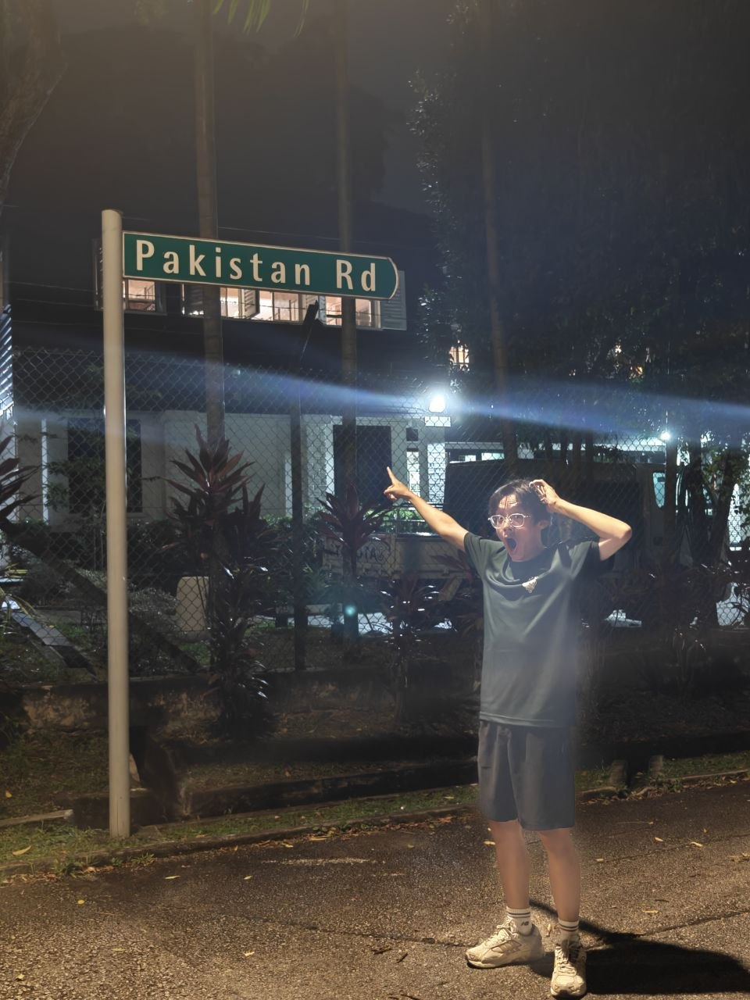
This was a pretty fun night time heritage ride. Met up with Yj after work to go and cycle and explore the bunkers of Sembawang, the old colonial houses, Sembawang park, as well as the supposedly haunted place near to the mosque nearby. Pretty fun side quest!
Also man this photo makes it look like I photoshopped myself into it but its just yj's camera quality.
22nd Jul 2026
Day ride 🚲ᯓ⋆.ೃ
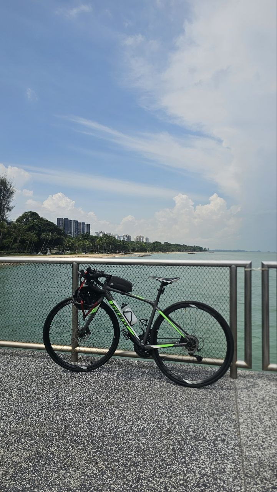
I am never cycling in the afternoon ever again.
16th Jul 2026
Annual DJB Dinner ⟡𓌉◯𓇋₊˚⊹♡
Exchange season is coming, and DJB won't be all in Singapore at the same time till May 2027, so we pushed our annual Christmas/CNY dinner forward. Cooked seafood boil but I don't quite think I liked it. Zx's mushroom sauce with hamburg steak was just incredible tho. Also I learnt how to make matcha today. Fun!
23rd Jul 2026
Started my part time j*b 🚴
Started work as a bike mechanic today. The boss and the mechanic are great people to work with. A great balance of work and play, and the work pays well enough for what I'm doing. Definitely will stay here for awhile. This is 100% a worthy side quest to have taken.
7th Jul 2026
Volunteering at Scape ⋆⭒˚𖠋𖠋𖠋*.⋆
I'm gonna be really honest and say that this wasn't the most enjoyable event that I helped out at, because all I did was just stand there for a couple hours to answer different questions while everyone else was super stressed out trying to manage the event. Nonetheless, this was a super cool event that I have to really respect the organisers for hosting because the scale they managed to achieve in such a short time is nothing short of amazing. However, I think that the main problem was that the target audience just wasn't me, which I think is a bit of a shame but it is what it is. Nonetheless, I did enjoy the part where I was basically just doing bag checks. Quite an interesting side quest, but I am for sure not doing this again anytime soon.
6th Jul 2026
Night rides 🚲ᯓ⋆.ೃ

Another peak night ride! Met up with Yc at Serangoon, then headed right down to Mt Faber for a climb. Surprisingly, 18 year old me was much more fitter than the person I am right now because I had to give up and take multiple breaks on my way up Mt Faber. Washed fr HAHAHAHA. But got this sick picture at the Henderson Waves so I'd call it a very very good night. Enjoyed myself!
5th Jul 2026
Botanic Gardens day༄˖°.🍃.ೃ࿔*:･
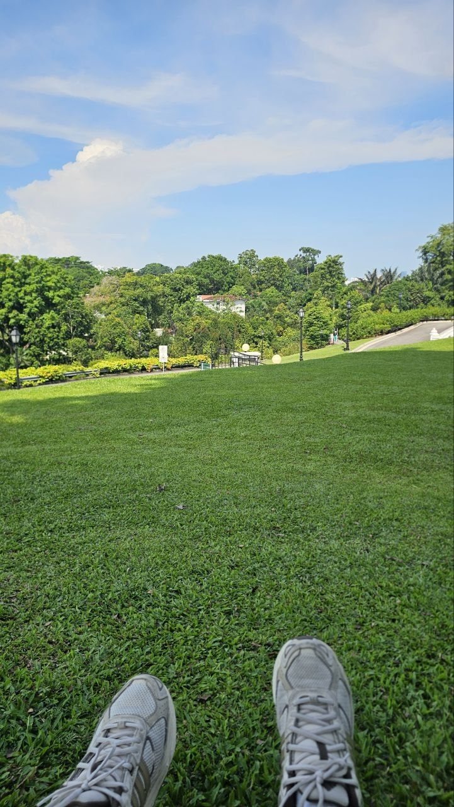
It was an extremely hot day, but this was really therapeutic. I really enjoyed my time today, since there were barely anyone in the park itself today so I basically had the whole place to myself. I also explored an extension that was pretty inaccessible to the general public and not somewhere that most people would go.
I came looking for copper and I found gold. This was actually such a nice place to put a mini museum at. Learnt a really interesting fact about Singapore's land use and how little of Singapore's forest is primary forests because nearly the entirety of Singapore used to be farmland which is crazyyyy knowing how dense the forest is in certain areas.
Good place to take graduation photos too. Or a picnic!
4th Jul 2026
Reached out to a bike shop for a j*b 🚴
As part of my "5 hours a day outside the house" promise I decided to find a job. Randomly dm'ed a bike shop near me to ask if they were willing to take me on. Surprisingly, they were! I'm working there right now. I really like the experience and I like how nice the work environment is. Excellent place to spend my free time.
Key takeaway today: Make your own opportunity! Don't limit yourself to what others are currently offering!
3rd Jul 2026
Libraries 𓂃˖˳·˖ ִֶָ ⋆📖⋆ ִֶָ˖·˳˖𓂃 ִֶָ
Libraries are amazing places that I need to remember to set aside time to visit. I especially love the Tampines Hub one. Huge place with a huge selection of books to choose! Comfy seating area too!
2nd Jul 2026
Night rides 🚲ᯓ⋆.ೃ
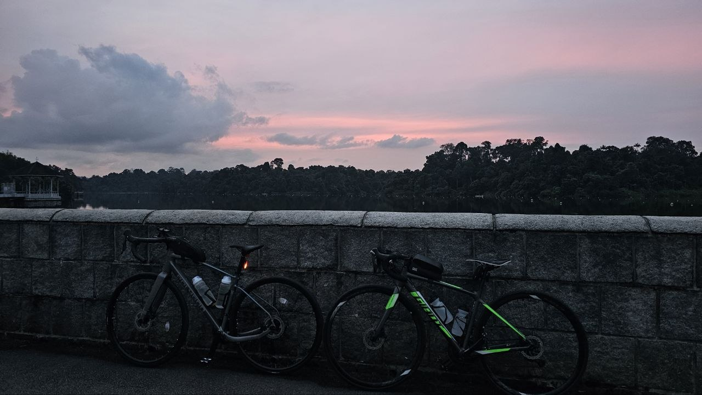
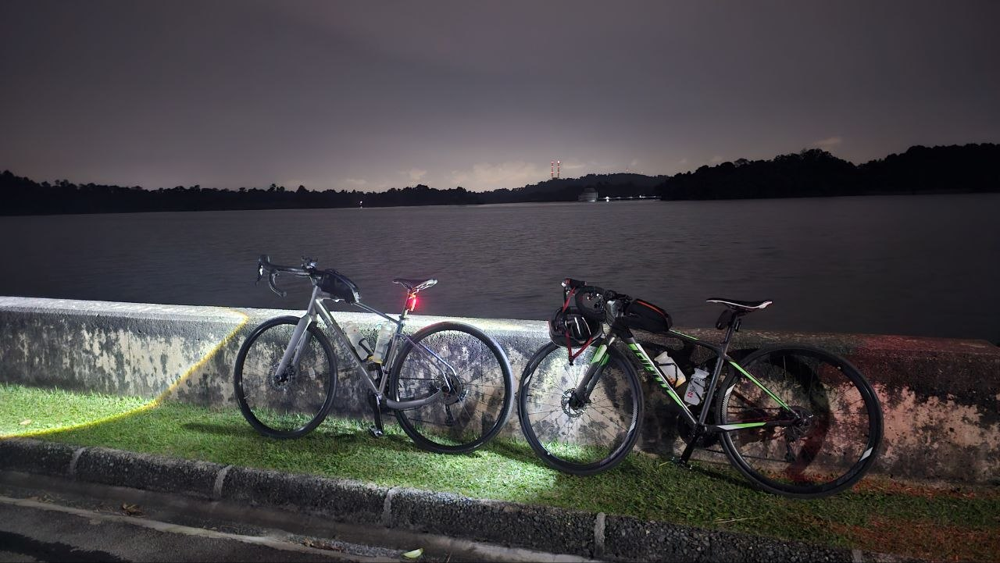
This was a PEAK day when it comes to a night ride. Met up with Yc at Bishan for dinner, then went to MacRitchie Reservoir where we just about managed to catch the sunset. Absolutely beautiful. Next, we went to Rifle Range Road, which was quite an experience (The climb sucked), before following the Rail Corridor up to complete a loop around the central catchment area. At the end we were like, y'know what, we can go for one more place. And thus we went down to the Upper/Lower Pierce Reservoir Dam. This time, I saw the same two people on their motorbikes as well. Then after that we headed home. But man, this was one of the most fun rides I've had in awhile!
30th Jun 2026
Art Gallery day 🏛️˙✧˖°📷 ༘ ⋆｡˚
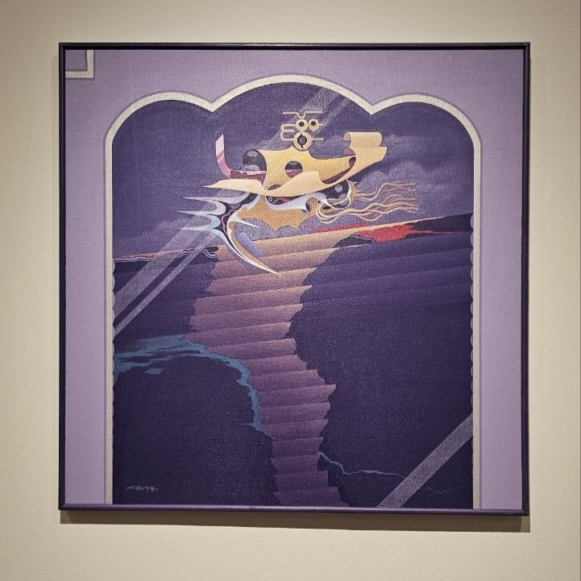
Second day of fixing my mental health! Last time I went to the National Gallery must've been 3 years ago. Although saying that, not much had changed. Nonetheless, the exhibitions which were there really delved into the history of Singapore that wasn't 100% curated. So I thought it was much more interesting getting to see things, especially old pamplets and film which showcased how Singapore looked like back then.
Key takeaway today: Sometimes, it helps to just go out of my way to take a look at the struggles that other people faced, and really help frame my own struggles in context, and kinda see that my struggles aren't unique, and that other people have made it through this phase of life, which means that I'm definitely going to be able to do so as well! Art galleries really make you feel less lonely!
29th Jun 2026
Park day ˚˖𓍢ִ໋🍃✧˚.💚⋆
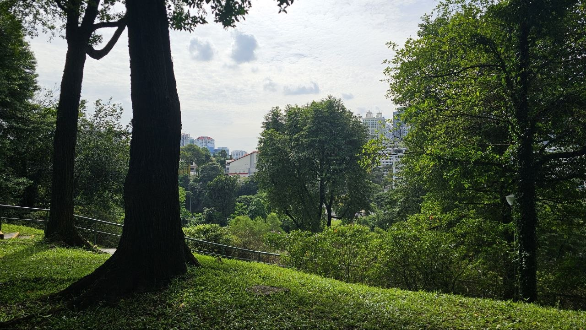
So! First day of fixing my mental health! I decided that I would visit a couple parks which I haven't gone to in ages. Had lunch at Chinatown, then I went to Gardens By the Bay to have a bit of a walkaround. It was really calming to just be in nature and hear the birds chirping since for the first time in god knows how long, I wasn't constantly being bombarded with the sound of traffic. Spent about an hour walking the grounds before getting bored. Decided to cycle over to Maxwell food center to get a quick snack before continuing on.
I walked over to Pearl's Hill park from there and got a pretty good workout from climbing all those steps. It's a surprisingly quiet place to be, given that the CBD is literally just next to it. I can't believe I've never visited that place before.
Next I took the bus over to Funan to buy some stationery to write down what I learnt today. Then I realised that Fort Canning park was literally opposite me. And so that's where I went. A ton of steps had to be climbed :( And on top of that there were just so many people around me so I couldn't really feel relaxed anymore there, so I just made my way over to Dhoby Ghaut, bought some art supplies and went home.
Key takeaway today: Don't listen to music when strolling! Listen to your surroundings or your own thoughts instead!
28th Jun 2026
Had a lil menty b today 🤪
Came to a realisation that despite always having things to look forward to and people to meet up with, I have spent the majority of my time over the past 2 months in front of my computer or my phone on the same few applications and barely see the sun because I'm always waking up past 2pm. And well, it has been rather detrimental to my mental health, to put it lightly. Like for realsies I had a serious mental breakdown today and just left my house to go on a super long ride to clear my head after rock climbing with Xy. Felt like an absolute beast after what I physically did today. Nonetheless, this event sparked a huge revelation for me.
New resolution: I will spend at least 5 hours a day out of my house and wake up at a relatively normal time.
27th Jun 2026
A quick Anywheel adventure🚲
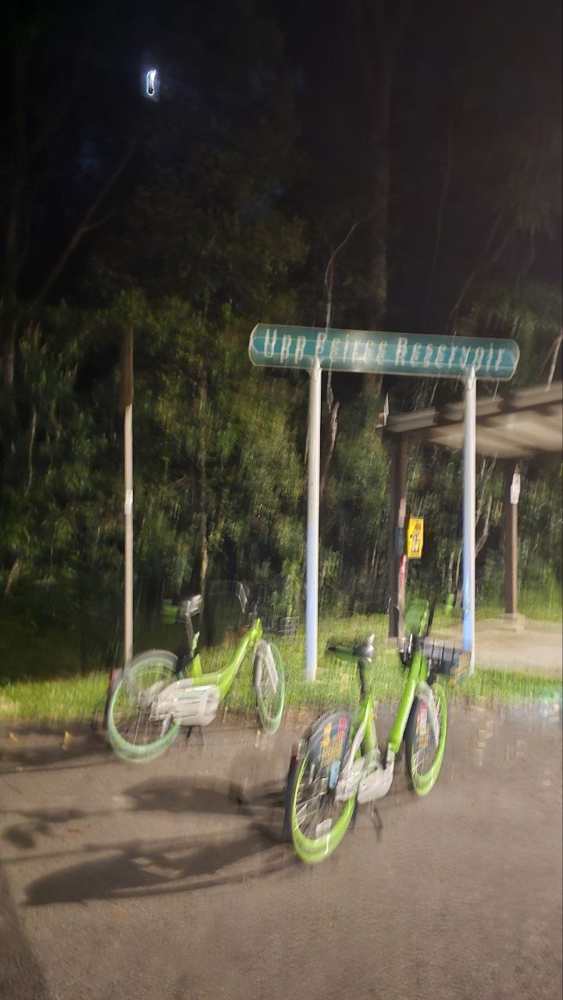
Went out with Zac again to explore Upper Thomson Road (Which we didn't manage to the last time cuz of parking issues). He brought his car this time LOL and it turned out that parking was FREE anyways so we didn't even have to worry about anything to begin with the last time...
We rented our anywheels and started heading up Old Upper Thomson Road. The last time I did this was about 2 years ago and during the day, so it was such a different vibe this time. With the pathetic light generated by the anywheel, it barely lit up anything and we were basically cycling in the pitch dark. On top of that there was a tree that had fallen onto the road which I barely managed to make out and avoid. But man was it worth it. The dam separating Upper and Lower Pierce reservoir was really nice and quiet at night.
On the way back we heard someone talking really loudly in the middle of the forest which was really weird. Like it was clearly just a bunch of people having fun but it was so confusing since the area where the voices were coming from was completely forested so we were just so confused as to where it could come from. On top of that there were two men who came the otherway on their motorbikes. We thought they were gonna kick us out but turns out they were just doing their own thing as well.
Also! Old Upper Thomson Road seems to be a popular place for nature lovers, saw a lot of them hunting for insects along the road and photographing them. Really nice to see!
20th Jun 2026
Cycling the Rail Corridor at 11pm 🚲ᯓ⋆.ೃ
I was soooooo bored on Sunday so I was like okay, what is the most interesting thing I'd be able to do TODAY? Then I remembered how I once cycled from my house down to the CBD then up the Rail Corridor with my friends a few years back. And I went yeah, why not? So that's how I ended up cycling alone by myself through a great portion of the unlit rail corridor on a Sunday Night.
Man, it's been such a long time since I've felt that primal fear of being alone in the dark in the middle of a tiny forest. Cured all boredom instantly and for the next couple of days. I saw a grand total of 7 people along that 15 km stretch and they were all only at the portions which were actually near civilisation (Near the MRT stations and all). The rest of the time I was completely alone and slowly losing my wits. Thank god I brought my speaker along with me blasting Tiffany Day's boiler room the entire way.
14th Jun 2026
Getgo Adventures ⛐
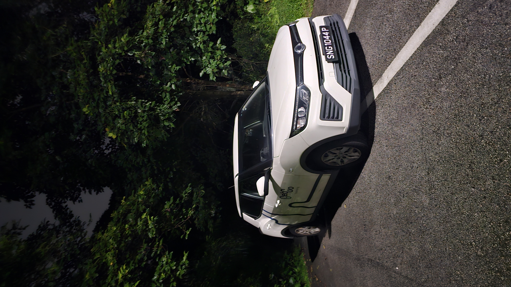
Been about two months since I've properly touched grass. Went with Zac to explore the Mt Pleasant/Bukit Brown region in the middle of the night for funsies. We both pussied out upon seeing just how dark it was at the cemetery so we gave up HAHAHAHAHHA.
11th Jun 2026
Volleyball 🏐🤾
No photos at all but I've really been enjoying my Sundays because I've been playing Volleyball with my JC friends and their friends. We do it once a fortnight and its genuinely pretty fun to be able to:
1. Pick up a new skill
2. Reconnect with old classmates that I wouldn't see often otherwise/make new friends too!
Really, this is I never realised could be that beneficial for my own mental health because it keeps me active and also just lowkey helps me breakaway from the mundanity of daily life which I find pretty constricting at times because I just tend to forget that I'm allowed to have other random hobbies too!
Once a fortnight, 2026
Late Afternoon ride to Chinese Gardens 🚴
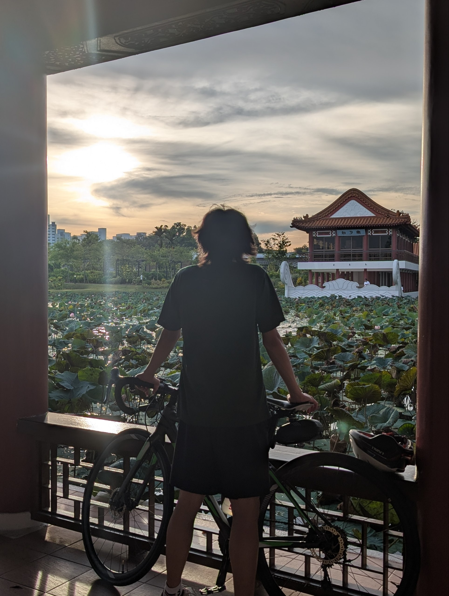
Got this Majestic picture of myself from this adventure taken by Yc. Found pretty cool stuff at the gardens itself (Theres a wholeass bubble tea shop in the middle of it in a fancy ancient chinese esque looking place). Had dinner at Taman Jurong Hawker Center which was absolutely bussing.
10th Apr 26
Jazz & Blues Concert 🎷
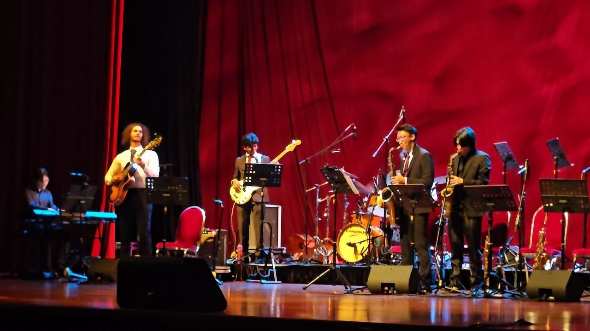
2 of my bandmates are in this insane Jazz band. Went to watch their concert and was absolutely BLOWN AWAY like god damn. Witnessed and heard bsolute peak today.
5th Apr 26
Cult Night 2 ft. PMO & Brownies 𝄞⨾💿✮˚.⋆
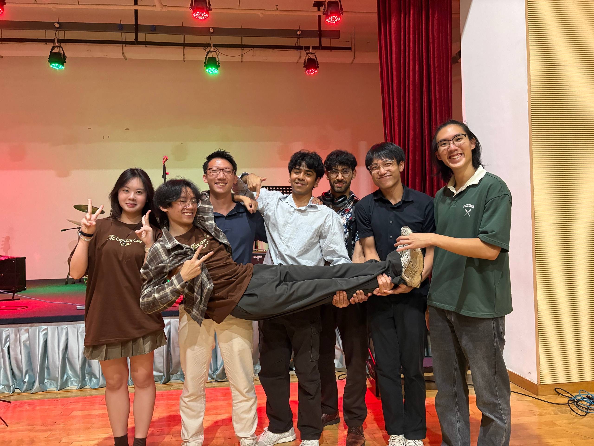
PMO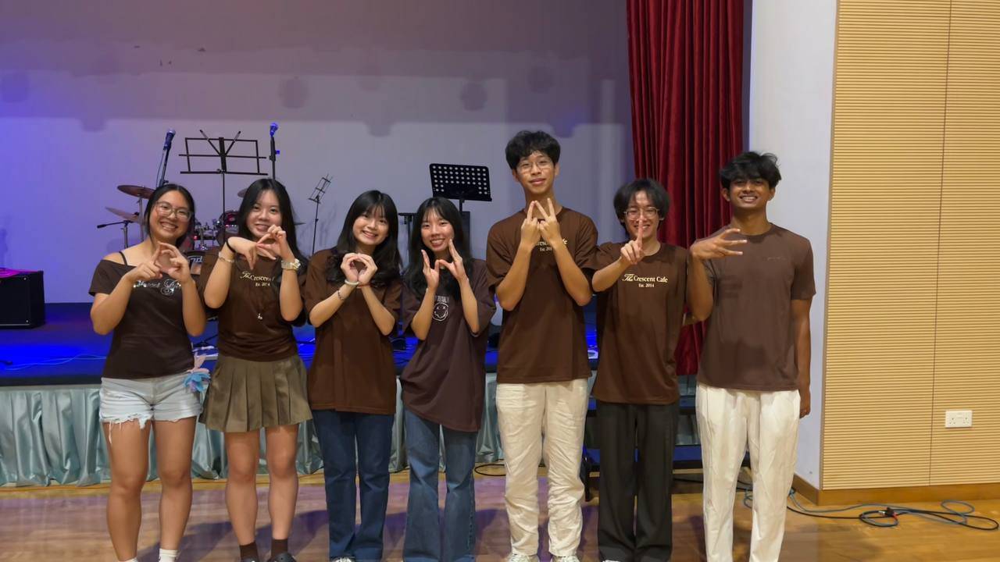
BrowniesLAST PERFORMANCE OF THE SEMESTER RAHHHHHH. PLAYED LAYLA LIVE BUT THE STUPID AMP DIED ON ME DHOIUWAOJIHADWOJIADWOIJADW ITS SO UNLUCKY OH MY GODDDDDDD. But okay whatever absolutely enjoyed this.
Me and my friend did a 1 hour performance marathon involving 10 songs cuz we're in both bands and the performances were arranged back to back. My GOD that was HELLA tiring but absolutely scratched an itch I never knew I had. How do artists do this in real life like my god its so fun yet so exhausting all at the same time.
I'm incredibly thankful I got to meet and play with these wonderful bunch. I really hope I'll continue to be able to do this for a long time to come.
1st Apr 26
Morning Wood 🪵
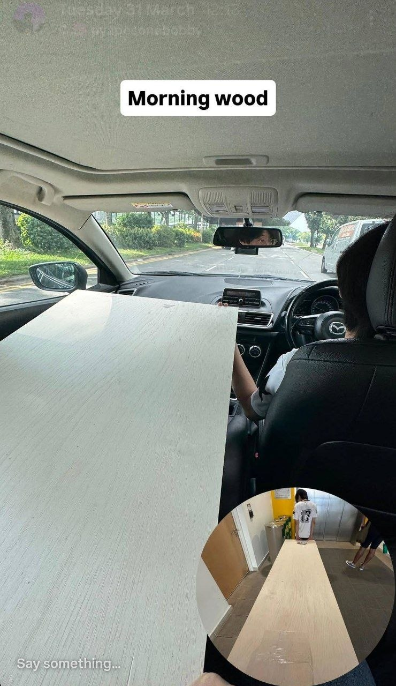
Me and my friend headed out to buy a 8ft by 4ft plank of wood from an industrial estate at Mandai early on a Tuesday morning for a Project. Most random experience of the sem ngl because wdym we lowered both the Front seat AND the back seat just so we could fit it into the car and drive it back to NTU. The whole thing stretched from the boot to the front seat.
But wow wood is really cheap man I did not know that you could just buy it for about 50 bucks. Maybe I'll buy some again in the distant future?
31th Mar 26
Chinese Pokebowl 🥗
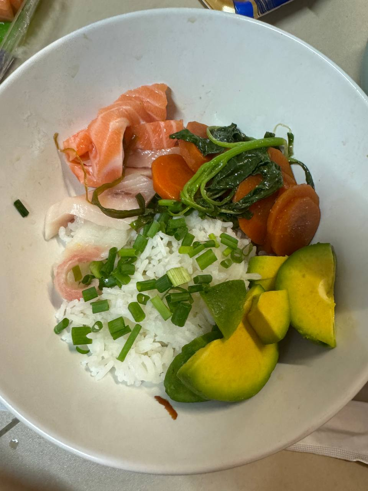
Weird ahh setup ngl cuz I spammed soya sauce in so much of the ingredients but it tasted hella good nonetheless. Definitely not proper pokebowl but food is food and I enjoyed this dinner very much.
26th Mar 26
Fuse Performance!! ♪ ༘⋆
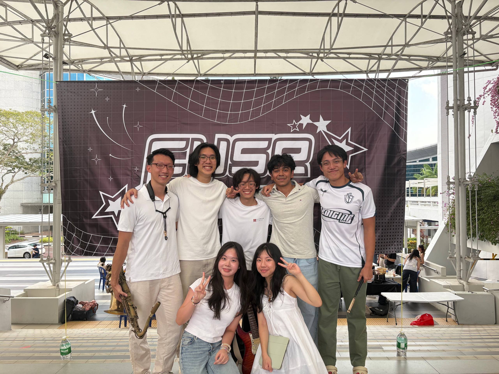
I absolutely loved the shirt they gave us for this concert it's absolutely gorgeous with the y2k vibes. Whoever made it slayed. Setlist included Last Surprise which is surprisingly fun to play???
24th Mar 26
DnD Performance ♬ˎˊ˗
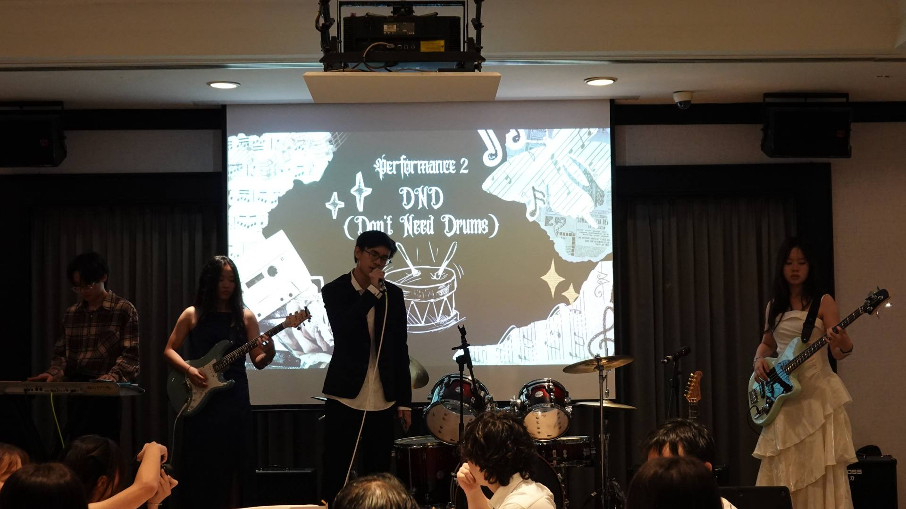
Played the keys for funsies hehe
13th Mar 26
Cult Night 1 𝄞⨾𓍢ִ໋
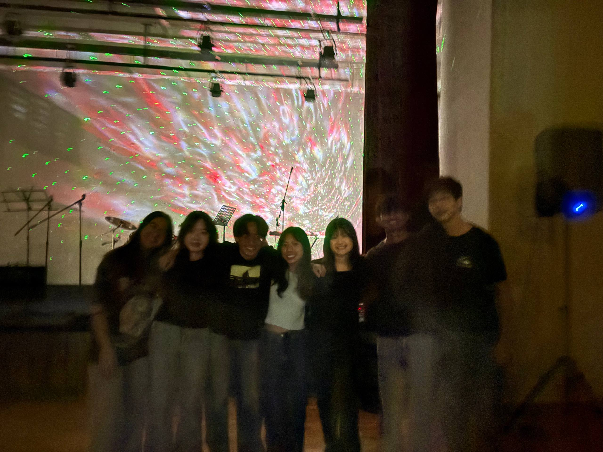
First Performance with Sem 2's band! Pretty chill and relaxing set this time! This photo is ELITE
25th Feb 26
Night rides 🚲ᯓ⋆.ೃ
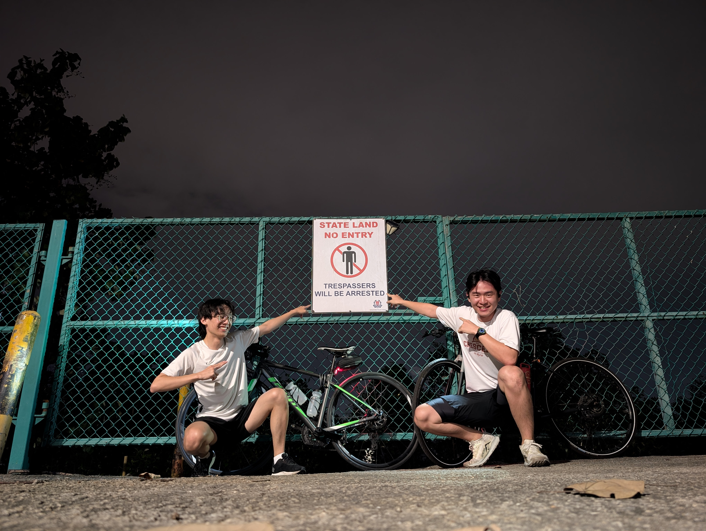
We made it to the end of Lim Chu Kang Road at record time. I think we averaged >24km/h for the entire journey there and back? But honestly just having someone else to cycle with is just so fun! More to come soon!
12th Feb 26
Watched the CB Dogs LIVE ᶠᶸᶜᵏᵧₒᵤ!
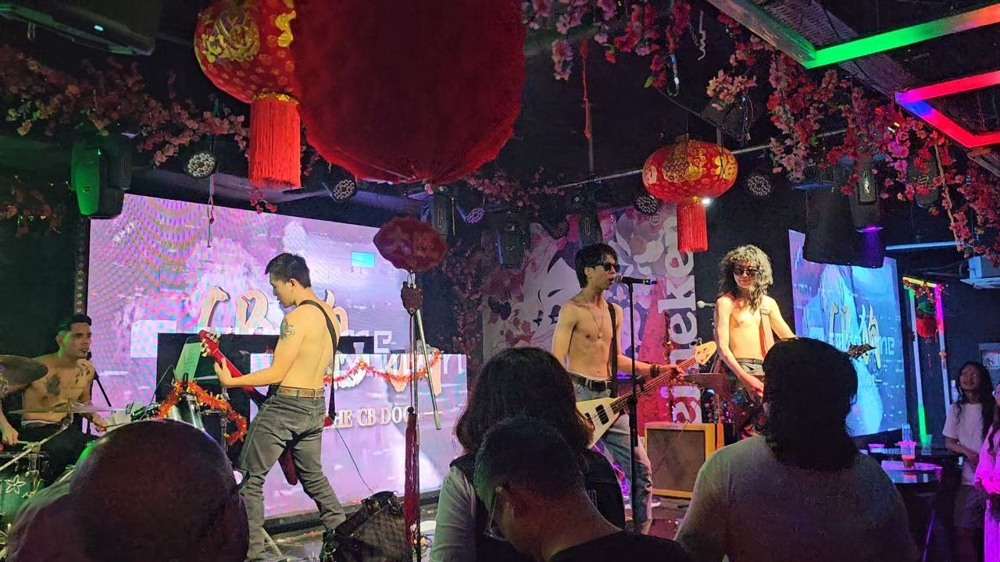
I feel like their mood wasn't exactly the best coming into this concert so it wasn't exactly the best first rock concert experience imo. A very very different vibe compared to what I'm used to.
Nonetheless they gave a solid performance which I really enjoyed. Midway through their set they played so damn hard they tripped the power HAHAHAH. Took about 10 minutes to get everything back to normal, and they did a really good job distracting the crowd while they fixed their back end issues. Hella novel experience imo, there's quite a bit to learn from how they were able to do that.
One thing I'll note in the future is just - maybe don't go to performances held in clubs? As much as I loved the atmosphere and the vibe everyone brought, the smoke was wayyy too unbearable. I was left coughing for the rest of the night after breathing in a lifetime's worth of secondhand smoke, and it took even longer to get the smell of cigarettes out of my clothes.
I did leave with a CB dogs shirt tho :D
Overall, great experience, but doubt I'd do it again.
7th Feb 26
Valentine's Performance (˶˃ ᵕ ˂˶) .ᐟ.ᐟ
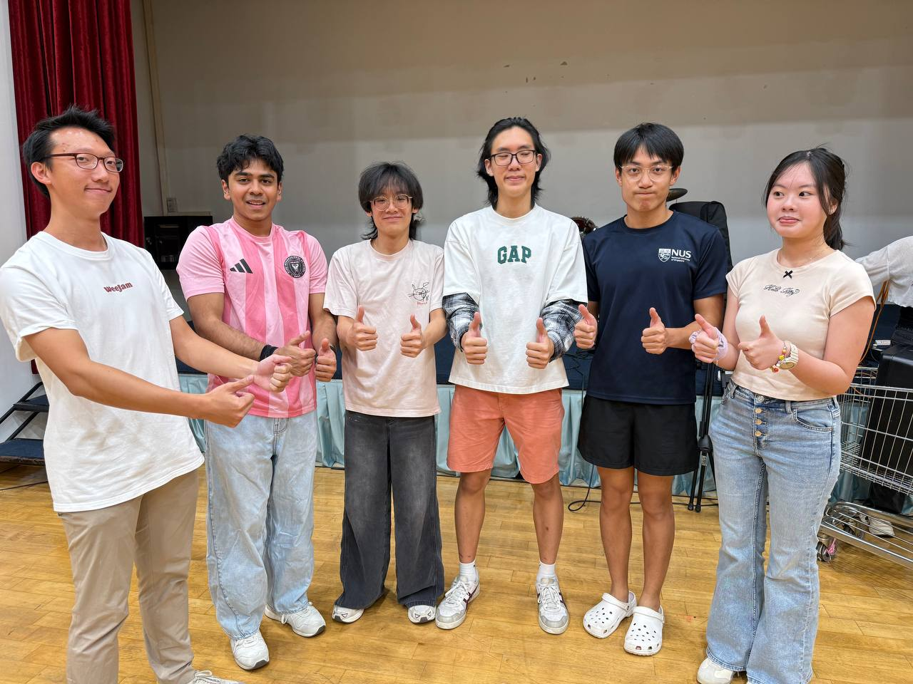
Oh my god I was sooooo sick the day of and the day before this performance. I think I came down with food poisoning because I was literally projectile vomitting. But I managed to lock in and play pretty well in the end!
I think my favourite song from this set for me would be Comfortably Numb by Pink Floyd and my second favourite would be Is this love by Whitesnake. Really learnt a lot through playing those songs and they just sound so majestic.
I really love playing with these guys in particular too! Pure vibes during practice sessions and the energy's always super high so I'm hella motivated during prac hehehe.
4th Feb 26
Watched Men I Trust LIVEEEEEEE ‧₊˚♪ 𝄞₊˚⊹
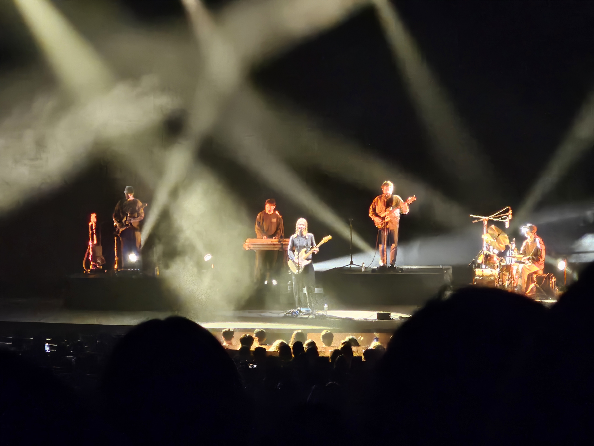
This was my first concert in 3 years, the last one being Babymetal's at Madrid! I really missed being able to feel the atmosphere, it's just so energising! There was another band called Vegtable opening for them.
Also not the way me and my friends were under the impression that they were Men I Trust T.T HAHAHAHAH. Took us till Men I Trust started their first song that it really hit us. Felt pretty dumb afterwards hahahah.
Ever since this concert I've been listening to them on repeat! I really like "Oncle Jazz" and "Equus Caballus" (the album they performed) the most!
26th Jan 26
First Performance of the year! ৻( •̀ ᗜ •́ ৻)
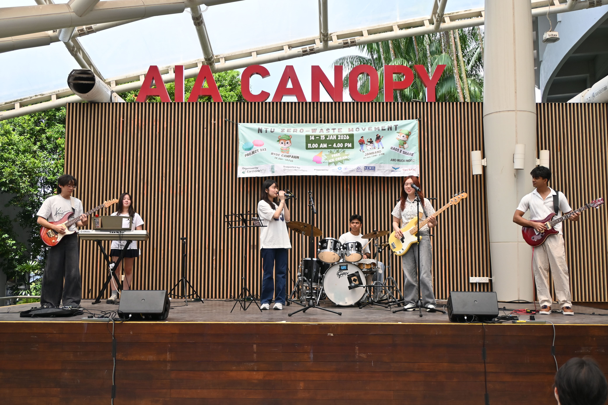
Pretty chill performance this time round. Very fun!
14th Jan 26
Taiwan's hella cool ദ്ദി(˵ •̀ ᴗ - ˵ ) ✧
Starting my 2026 the right way!
31st Dec 25 - 5th Jan 26
I LOVE MY BAND ✧｡٩(ˊᗜˋ )و✧*｡
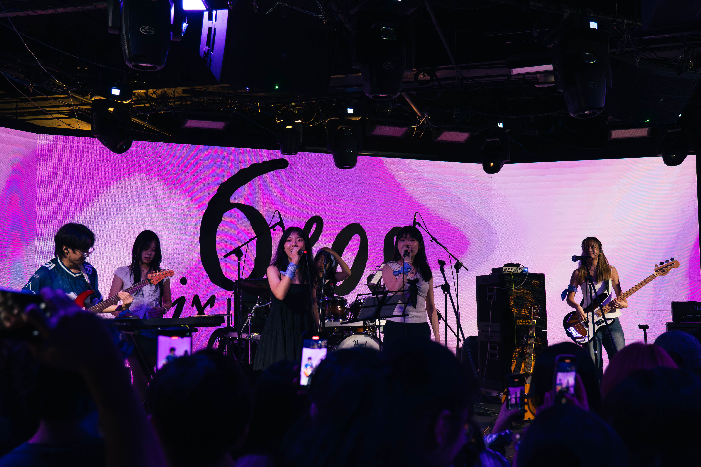
My first ever performance at an external performance venue LET'S GOOOOOOOOOOOO. I made a few mistakes here and there but WHATEVER I PERFORMED WELL YIPPEEEE ++++ My bandmates are all so fucking cool 100000/10!!!
10/10 HELLA FUN I HOPE THERE'S GONNA BE MORE TO COME SOMETIME IN MY LIFE!
24th Oct 25
I joined a cycling club! ( ദ്ദി ˙ᗜ˙ )
I wanted to try something new. Years ago, my friend introduced me to this app called meetup.com, where you can find and meet people who share the same hobbies as you do. I never really did anything about it because the idea of meeting complete strangers and spending time with them seemed kinda scary, especially considering the fact that they would most likely be out of the age range of people I was used to talking to.
But well, I finally had the motivation to sign up for an event last week, and so that's what I did.
I went in there with 0 clue of what to expect. How was this event run? How serious were the people there?
Even on the morning itself, when I woke up at 630am to prepare to leave the house, I was pretty hesistant about whether to go or not, and lowkey was trying to find as many excuses as possible to not go.
Eventually, I realised, whatever man, I want some real change in my life, and by going to this event I signed up for, it shows myself that I'm serious about making changes in my own life. Especially the waking up before noon part.
So there I was, pulled up to the group of people at the meeting point and talked to the first person I saw there. They were very friendly, so honestly I think that's how I knew this was the right place. They too were attending this for the first time, and had no idea what to expect either.
But they key difference to me was the fact that everyone was here for fun. No sense of obligations or whatnot. Just fun.
There was a brief round of introductions and a short briefing of what to expect, and then we headed off to Cosford Container Park.
Had a nice breakfast with a good view, and afterwards started talking with the clubs regulars. I remember nothing of the conversations we had (Which honestly is a good thing!), but I do know that it was a breath of fresh air, and really just reminded me of how unserious life actually is.
That, and getting reminded of the fact that I am still really really young in the grand scheme of things.
After we all had our breakfast, we headed back to the starting point, with a couple breaks to take photos as a group against nice backdrops.
Furthermore, the thing I was most intrigued by was the fact that everyone didn't just leave the second we got back, which I expected, but hung around to have a drink and continue to chat. I think that was vibe which really cemented my decision to continue attending more of such rides with these people.
I do want to continue making friends and get to know more people who do value these kinds of interactions.
Here's the view from Cosford Container Park.

18th Oct 25
I LEARNT HOW TO WAVEBOARD ₍₍⚞(˶>ᗜ<˶)⚟⁾⁾
I'm going to a ski resort for the first (proper) time in my life. Like an actual stay there instead of just a day trip to just check it out. So, this meant that I now had a choice in what skill I'd like to pick up. Will it be skiing? Or snowboarding? And something in my mind just told me, hell yeah man lets snowboard. It looked so cool man I really wanted to try it.
So I went to ask my friends who snowboarded what their experience was like and how did they picked it up. One of them told me: You should try a ripstick, the fundamental skills are quite similar to snowboarding. Immediately I went online to check out the prices of them. A mere 15 dollars got me one of them.
(I proceeded to forget about it for awhile but thankfully they reminded me about it)
As soon as I got that message, I went, yeap, I'll commit to learning this new skill, and then I went ahead and bought it immediately.
Today rolled around and the waveboard is finally in my house. First thing I woke up I immediately went to the common corridor to try it out and see whether I could balance on it. Keep in mind this is only the second time in my life that I've stepped on any sort of board at all. Completely unfamiliar territory here. I'm always on my bike instead of this. Watched a grand total of one video the night before to prepare myself for this experience LOLL
The first half an hour was HARD. I stood next to the walls and learnt how to get up onto the board without falling. Left leg to the right side of the front wheel, stabilised it, and use my right left to leap onto the board. Took quite a few attempts before I even managed to get on properly, and the board was making such loud sound everytime I fell off I kinda felt sorry for my neighbours who might've been trying to rest at 10am on a Sunday. Oops.
But okay, after awhile, I did get the hang of it and where to put my foot in order to get the best stability and control. I could move really really slowly. (My fingerprints now cover the walls because my lord are they dirty)
Had a quick lunch and figured that I was ready for the proper thing now. Went down to the basketball court to get more space to practice, and thankfully there wasn't anyone around at all so I had the whole place to myself :D
And one thing I immediately noticed was the fact that the basketball court wasn't flat at all but raised at the center. So for a beginner like me it was so confusing as to why I kept stopping when travelling in certain directions as opposed to it being so easy coming back until I realised that fact.
But yeah I kept practicing until it got much more natural and I was able to actually exert enough force onto the board so I could go up that slight incline to finally make my first trip down the length of the basketball court. So pumped when I finally did that.
Continued practicng over and over again till it got more natural and I was finally able to make an entire loop around the court oml I was so damn PROUD of myself for doing it it was insane I loved every single bit of it.
Thankfully, turning and balancing felt pretty natural to me the entire time (thanks past me for practicing cycling with no hands). The front part of the waveboard basically did the turning, the rear did the propulsion. Pretty simple system actually, much better than I initially feared.
So yeah! This is what I've managed to do and man am I proud of myself for picking up a new skill. It's truly been awhile since I've done something new and man I want to do more stuff from now on.
Anyways, here's a video of me :D
12th Oct 25
Aircon Woes (˚ ˃̣̣̥⌓˂̣̣̥ )
If I had a dollar for everytime I took apart an aircon, I'd have two, which isnt much, but its weird that it happened twice.
So yeah school has once again started and the first thing I'm hit with is a terrible sore throat which then developed into a full blown cough. So I thought, huh, thats really unlucky that everytime I'm back in hall I'm always hit with a really bad flu. Because when I thought back to it I ended up with the flu so many times over the course of the previous year. So I'm just thinking, Oh! Maybe its just me being really unlucky and so I think nothing about it.
And so the weekend goes by, I get home and my flu gets noticeably better. I feel great by the time Sunday rolls about and I go back to my dorm and head to bed thinking about what a great week this week's gonna be.
BOOM I wake up with the worst cough+sore throat combination I've felt in awhile, and a bit of a fever to go with it. And I'm just thinking: Just what is it that's causing me to be so sick?
Then it hits me - I haven't cleaned the portable aircon ONCE since getting it and there's probably a ton of mould in there.
AND YES THERE REALLY WAS A LOT OF MOULD I SPENT THE BETTER HALF OF AN ENTIRE DAY TAKING APART THE AIRCON AND PAINSTAKINGLY CLEANING IT BIT BY BIT OH MY LORD IT WASN'T EVEN A LAYER OF MOULD IT WAS A FULL ON BROWNIE OF MOULD IN THERE NO WONDER WHY I KEPT FALLING SICKKKK
But well that's that I now have a spanking clean aircon which should hopefully be much more colder than it already was. (I also have two screws which I couldn't find the hole they belonged so oh well)
And so for the rest of the month I suppose I'm gonna be testing my hypothesis of whether my aircon really was the problem (I really hope it was because I coughed so much my lungs have started to hurt ughhhh)
Anyway for the uninitiated heres how an aircon looks when you tear it apart.
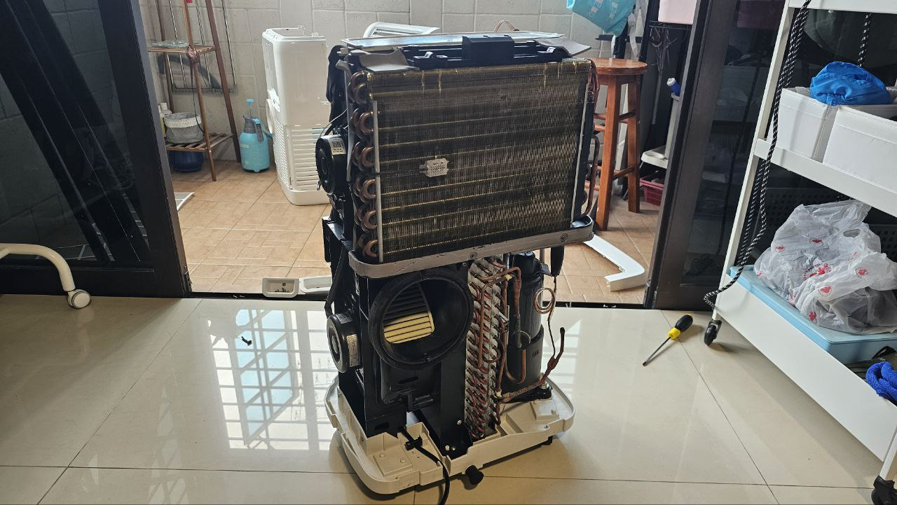
11th Aug 25
Cat Cafe!! ≽^•⩊•^≼
So recently I went to a cat cafe called Catonomy in Penang and met the most friendly cats I've seen in awhile they were legit sooooo charming. It was located around a 10 minutes walk from my accomodation in Georgetown, so I think it was pretty convenient to get to! This was my second time visiting a cat cafe so I was wondering how it'd go this time, because the last time I went to one the cafe was so small and the cats were all so stressed that they were completely disinterested in interacting with humans which was quite disappointing to see D:
So when I stepped into the cafe I was happy to see that it took up the entirety of a shophouse and was really big, with a 2nd floor for the cats to go to when (presumably) they were done for the day. The cats were all very friendly and used to humans so it was really nice. Plus, the entry fee was buying a meal/drink from them, and I ordered the Kaarage Don from them at only ~RM20 which was such a steal! It was hella fun, 10/10 would go again if I ever were to go back to Penang.
Notable cats: Super affectionate Ragdoll (no vid cuz it left to go upstairs), 2 young Tuxedoes (pickupable), and Boba Eyes
Cat Tax:
4th - 7th Aug (@Penang)
The Boys Head to Gunung Lambak
This Summer, the boys and I headed over to the city of Kluang to scale a 500m tall hill. Here's how it went.
5th July 25